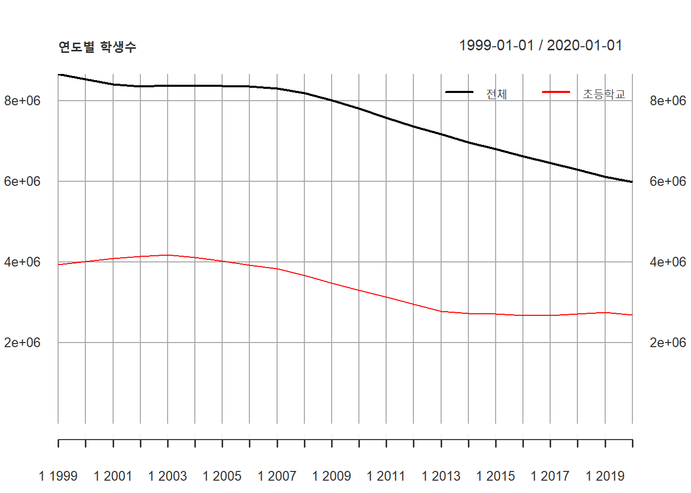
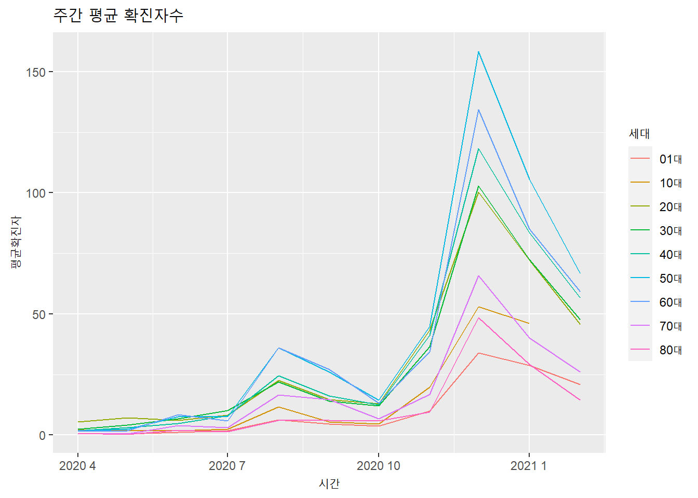
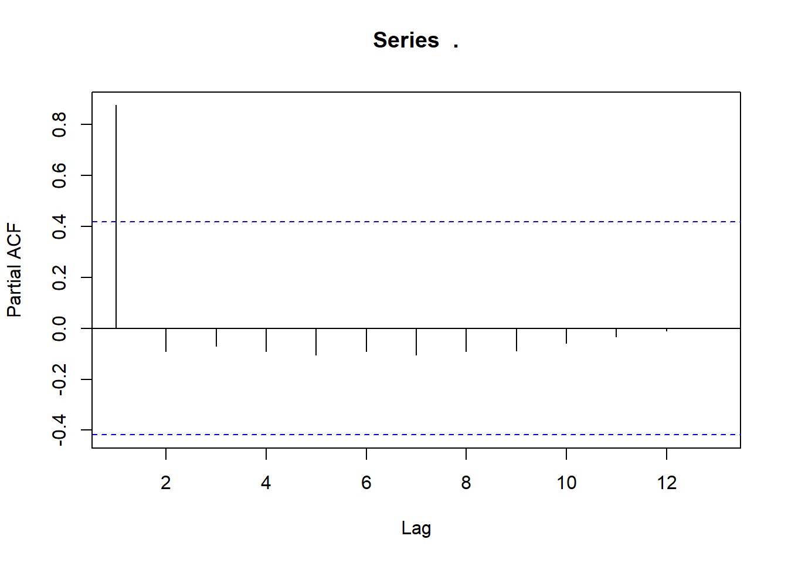

Chapter 3 시계열 Visualization
- 시계열 데이터는 일반적으로 가로축(X axis)에는 시간 인덱스가 위치하고 세로축(Y axis)에 값이 표현되는 라인 그래프가 일반적으로 많이 사용됨.이러한 그래프의 형태는 시간의 흐름에 따라 발생하는 추세(Trend), 계절성(Seasonality) 등의 시계열 특성을 표현하고 파악하는데 효율적임. 시계열 데이터 분석에는 시계열 데이터의 직접적인 라인 그래프 외에도 자기 상관 함수(ACF : AutoCorelation Function), 편자기상관함수(PACF : Partial AutoCorelation Function) 등의 다양한 그래프들이 존재하나 이 장에서는 시계열 데이터의 선 그래프를 작성하는 방법을 xts, ggplot2, forecast, timetk 등의 패키지 별로 설명하고자 함.
3.1 ggplot2
ggplot2는 시계열 데이터 이외에 다양한 plot을 그리는 방법을 제공하는 R의 대표적인 plot 작도 패키지로 널리 사용되고 있음. ggplot2는 R-Studio의 수석 데이터 사이언티스트인 Hadley Wickham이 주도적으로 개발한 패키지로 2005년 발간된 Leland Wilkinson의 The Grammar of Graphics을 기본으로 작성되었음.
The Grammar of Graphics는 데이터를 효과적으로 표현하기 위해 다음과 같은 7가지 element를 통해 표현할 것을 제안함.2 ggplot2 plot의 시작은 ggplot 함수를 호출하면서 시작하는데 다음의 각각 element들을 + 기호를 사용하여 누적시켜가면서 하나의 plot를 생성함.
data
- plot에서 표현해야할 데이터를 지정함. 하나의 ggplot2 plot 안에는 하나 이상의 데이터를 포함시킬수 있는데 기본적으로 하나의 데이터는 ggplot 함수에 포함되어야 하며 추가적인 데이터를 표현하기 위해서는 +로 연결되는 geom_ 함수에 설정하여 사용할 수 있음. ggplot에서 지원하는 데이터 타입은 data frame인데 data frame이 아닌 객체가 설정되면 내부적으로 data.frame으로 변환(fortify 함수를 활용)하여 데이터로 설정함.
Aesthetics
- Aesthetics는 데이터의 컬럼을 시각적 속성에 매핑시키는 element임. Aesthetics는 ggplot 함수와 geom_함수로 표현되는 개별 레이어에서 aes 매개변수를 이용하여 매핑 가능함. 매핑 가능한 시각적 속성은 X axis, Y axis, color, size 등임.
Geometries
- Geometries는 plot에서 실질적으로 표현되는 point, line, bar 등의 그래픽 element를 설정함. 일반적으로 하나의 Geometries는 하나의 layer를 생성하여 표현되는데 여러 Geometry layer가 겹쳐져서 하나의 plot을 생성하게 됨.
Facet
- plot에 표현되는 데이터가 일변량(univariate)이 아닌 다변량(multivariate)인 경우 하나의 plot에 다변량을 표현하면 여러 Geometries가 혼재되어 데이터의 분석이 어려움. 이런 경우 다변량을 일변량화하여 일변량 plot을 다중으로 표현할 때 사용하는 element임.
Statistics
- mean, median 등 표현할 데이터의 통계값을 표현할 필요가 있을 때 사용하는 element임.
Coordinates
- plot에 표현되는 2차원 좌표계를 설정하기 위한 element임. X axis와 Y axis의 limit, label 등을 설정할 수 있음.
Theme
- plot 제목, axis 제목, axis 단위, legend 등 plot의 전반적인 디자인을 꾸며줄 수 있음. 미리 정의된 Theme을 적용하여 설정할 수 있음.
ggplot를 활용해 시계열 plot를 표현하기 위해서는 위의 7개 element 중 Geometry는 line 이어야 하며 Aesthetic의 X axis는 시간 인덱스로 설정되는 plot이 많이 사용됨. 앞서 설명한 바와 같이 ggplot는 data.frame을 데이터로 설정이 가능하고 X axis에 시간 컬럼을 설정하기 위해서는 컬럼에 접근이 가능한 컬럼명이 있어야 하기 때문에 ts나 xts 클래스보다는 data.frame을 data로 설정하는 것이 적합함. 2장에서 저장한 students 데이터프레임을 시계열 plot으로 그리면 다음과 같음.
library(ggplot2) students.ggplot <- students %>% filter(지역규모 == '계') # 2장에서 읽어들인 students data.frame에서 합계만 filtering ggplot(data = students.ggplot, aes(x = 연도, y = 학생수계)) + geom_line(aes(group = 1))
ggplot 문법 설명 및 plot 수정
‘data =’ : ggplot를 사용하여 플로팅하기 위한 데이터가 저장된 data.frame 객체명을 설정. ‘data =’ 키워드는 생략 가능하므로 바로 객체명을 설정해도 가능함.
aes : Aesthetic element를 설정하는 부분으로 ‘x =’ 은 가로축에 바인딩 될 컬럼명, ’y = ’은 세로축에 바인딩 될 컬럼명을 설정하는데 가로축은 시간이 포함된 컬럼을 설정해야 올바른 시계열 plot임. 위의 예제에서 X axis에 연도 컬럼을 바인딩했는데 student data.frame에 연도 컬럼은 integer class이기 때문에 바로 연도 컬럼을 바인딩 하면 연도가 다 표기되지 않고 일부 연도만 가로축에 표기됨. 연도 전체를 표기하기 위해 연도컬럼을 as.factor 함수를 사용해 factor class로 변환함
ggplot(data = students.ggplot, aes(x = as.factor(연도), y = 학생수계)) + geom_line(aes(group = 1))
geom_line : plot에 직접적으로 표기될 Geometries를 line으로 설정하는 부분임. 다른 Geometries와 달리 line plot은 하나의 라인으로 묶이는 데이터 그룹을 지정해야 하는데, 위의 예와 같이 데이터 그룹이 하나밖에 없을때는 1로 설정 가능함. 만약 다변량 라인 플롯을 작성시에는 그룹핑이 가능한 컬럼을 확보하고 이 컬럼을 ’group =’로 지정하여 ploting함.
ggplot(data = students, aes(x = 연도, y = 학생수계)) + geom_line(aes(group = 지역규모, color = 지역규모))
데이터 포인트 추가 : plot을 plot을 보다 보기 편하게 만들기 위해 point geometires layer를 추가함. geom_point함수를 사용하며 ’shape =’은 point 형태로 circle로 설정함.
ggplot(data = students.ggplot, aes(x = as.factor(연도), y = 학생수계)) + geom_line(aes(group = 1)) + geom_point(shape = 'circle')plot 제목, 축 제목 설정 : 축 제목은 aes에서 설정된 컬럼명이 자동 설정되는데 앞서 X axis에 바인딩된 컬럼에 as.factor함수를 적용했기 때문에 축 제목이 ’as.factor(연도)’로 설정됨. 또한 전체 plot의 제목을 설정할 필요가 있는데 plot 제목과 X axis의 축 제목을 labs 함수를 사용하여 재설정해야 함.
ggplot(data = students.ggplot, aes(x = as.factor(연도), y = 학생수계)) + geom_line(aes(group = 1)) + geom_point(shape = 'circle') + labs(title = '연도별 학생수', x = '연도')Y axis label : Y axis의 표현을 설정하는 부분으로 ’label =’은 Y axis에 표기되는 label 값이 클 경우 자연수가 아닌 지수형태로 표기되어 보기가 불편함. 따라서 지수 형태의 표기를 자연수 형태의 표기로 바꾸어줄 필요가 있으며 천단위에 ,를 찍어 보다 보기 편하게 설정함
ggplot(data = students.ggplot, aes(x = as.factor(연도), y = 학생수계)) + geom_line(aes(group = 1)) + geom_point(shape = 'circle') + labs(title = '연도별 학생수', x = '연도') + scale_y_continuous(labels = scales::number_format(big.mark = ','))
X axis label : X axis label이 너무 붙어있어서 연도가 정확히 보이지 않음. 따라서 연도를 90도 회전하여 세로쓰기하면 보다 보기가 편함.
ggplot(data = students.ggplot, aes(x = as.factor(연도), y = 학생수계)) + geom_line(aes(group = 1)) + geom_point(shape = 'circle') + labs(title = '연도별 학생수', x = '연도') + scale_y_continuous(labels = scales::number_format(big.mark = ',')) + theme(axis.text.x=element_text(angle=90,hjust=1))
ggplot외 타 패키지에서 제공하는 plot은 ggplot에서 제공하는 기능만큼 다양한 기능을 제공하지 않는다. 디자인이 중요한 plot을 작성하기 위해서는 ggplot의 다양한 기능을 사용하여 plot을 작성하는 것이 바람직하다. 이외에 ggplot에 관련한 자세한 사항은 다른 문서를 참조할 것을 권한다.
3.2 XTS
xts는 시계열 데이터를 다루는 데이터 클래스와 데이터 핸들링 함수, 데이터 ploting 함수 등을 제공한다. 따라서 xts 패키지에서 제공하는 함수는 xts class의 데이터 객체를 대상으로 작동한다.
xts 패키지를 사용하여 plot을 작성하려면 plot.xts()함수를 사용한다. plot.xts()을 활용해 작성한 plot에 추가적으로 line, legend 등을 추가하기 위해 add_ 함수를 사용할 수 있다.
xts 패키지의 plot.xts를 활용하는 것은 디자인적 측면에서 ggplot보다 못미치지만 시계열 데이터의 흐름을 빠르고 쉽게 파악하는 사용이 간편한 plot 함수를 제공한다는 점에서 큰 장점이 있다.
plot.xts(students.total.xts)plot.xts 문법 설명 및 plot 수정
plot.xts 함수에 xts 데이터를 설정함으로써 xts class 데이터에 대한 plot을 간단한 코드로 생성할 수 있다.
plot 제목 및 축 제목 : plot.xts로 생성된 plot의 제목은 ‘main’ 매개변수를 사용하여 설정이 가능하고 부제목은 ‘sub’ 매개변수로 설정이 가능하다. 축 제목은 ‘xlab,’ ‘ylab’ 매개변수를 통해 설정한다.
plot.xts(students.total.xts[,2], main = '연도별 학생수', sub = '전체 학생수의 연도별 변화', xlab = '연도', ylab = '학생수')
plot 축 범위 : plot 축의 범위는 ‘xlim,’ ‘ylim’ 매개변수를 사용하여 설정이 가능하다. 설정시에는 최소값과 최대값을 c() 함수를 사용하여 설정한다.
plot.xts(students.total.xts[,2], main = '연도별 학생수', sub = '전체 학생수의 연도별 변화', xlab = '연도', ylab = '학생수', ylim = c(0, max(students.total.xts[,2])))
시계열 데이터 추가 : 다변량 xts의 경우 한번에 다량의 line plot가 자동적으로 생성되는데 일변량 line plot를 여러개 생성해야할 경우는 lines 함수를 사용하여 기존의 plot에 추가할 수 있다.
lines(students.total.xts[,4], col = 'red')
범례 추가 : 다중의 line이 하나의 plot에 표현되는 경우 범례가 필요하다. xts에서 범례를 표시하기 위해서는 legend함수를 사용하여 plot에 표시한다.
addLegend("topright", legend.names=c('전체', '초등학교'), col=c('black', 'red'), lty=c(1,1), lwd=c(2,2), ncol=2, bg="white")
3.3 timetk
timetk 패키지는 미래 예측, 머신러닝 예측을 위해 시계열 데이터의 시각화, 데이터 핸들링을 하기 위한 패키지이다. 이 패키지는 ‘dplyr,’ ‘xts,’ ‘forecast’ 등의 패키지를 기반으로 설계되었고 xts패키지와 달리 tibble이나 data.frame을 기반으로 작동한다.3
timetk에서 제공하는 데이터 plot 함수는 plot_time_series() 함수가 유일하다. 추가적으로 상관관계, 계절성, 이상치 ploting을 위한 함수들이 추가적으로 존재한다.
timetk plot이 다른 plot에 비한 장점은 여러가지가 있는데 필자는 가장 큰 장점은 interactive plot이 자동적으로 생성된다는 점을 들수 있다고 본다. plot_time_series() 함수는 plot_ly 패키지를 기반으로 ploting하기 때문에 plot_ly의 기능을 모두 사용할 수 있는데, 마우스를 plot위로 가져가면 해당 마우스 포인트에 대응하는 정보가 표현되거나 드래그하여 plot을 zoom in 할 수 있는 기능을 기본적으로 제공한다.
students %>% filter(지역규모 == '계') %>% plot_time_series(.date_var = 연도, .value = 학생수계)plot_time_series 문법 및 plot 수정
데이터, X, Y 축 매핑 : plot_time_series 함수의 가장 먼저 나오는 세가지 매개변수인 .data, .date_var, .value는 기본값으로 생략할 수 없기 때문데 최소한 3개의 매개변수는 필수적으로 필요하다. .data는 시간 컬럼이 포함된 tibble이나 data.frame, .date_var는 시간이 표기된 컬럼, .value는 plot에 표현될 숫자형 컬럼을 설정함.
추세선 설정 : 위의 예제에서 .value로 설정된 하나의 컬럼을 ploting되어야 하지만 실제는 두개의 선이 나타난다. 검정색 선은 실제 데이터를 표현하는 line plot이고 파랑색 선은 ‘LOESS’ 평활화된 line plot이 나타난다. 평활화 line은 .smooth 매개변수로 조절 가능하다.
students %>% filter(지역규모 == '계') %>% plot_time_series(.date_var = 연도, .value = 학생수계, .smooth = FALSE)다변량 plot : plot_time_series()를 사용하여 다변량 plot을 하기 위해서는 ggplot와 마찬가지로 .value에 매핑한 데이터 컬럼을 분류해줄 컬럼이 필요하다. 다변량 데이터는 컬러로 구분되어 표현되며 자동적으로 범례가 오른쪽에 표시된다.
students.timetk <- students plot_time_series(.data = students.timetk, .date_var = students.timetk[,1], .value = students.timetk[,4], .color_var = students.timetk[,2], .smooth = F)